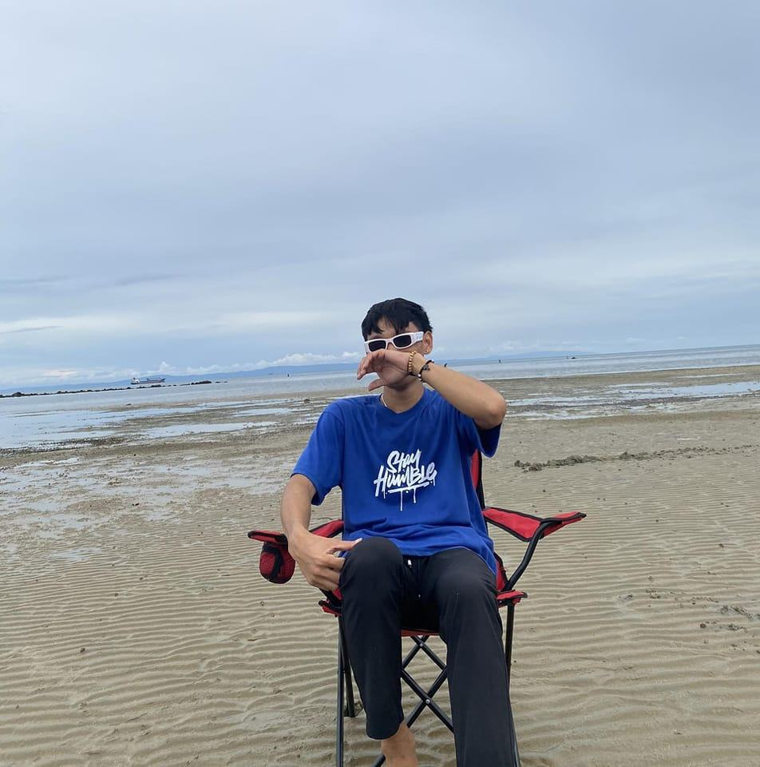
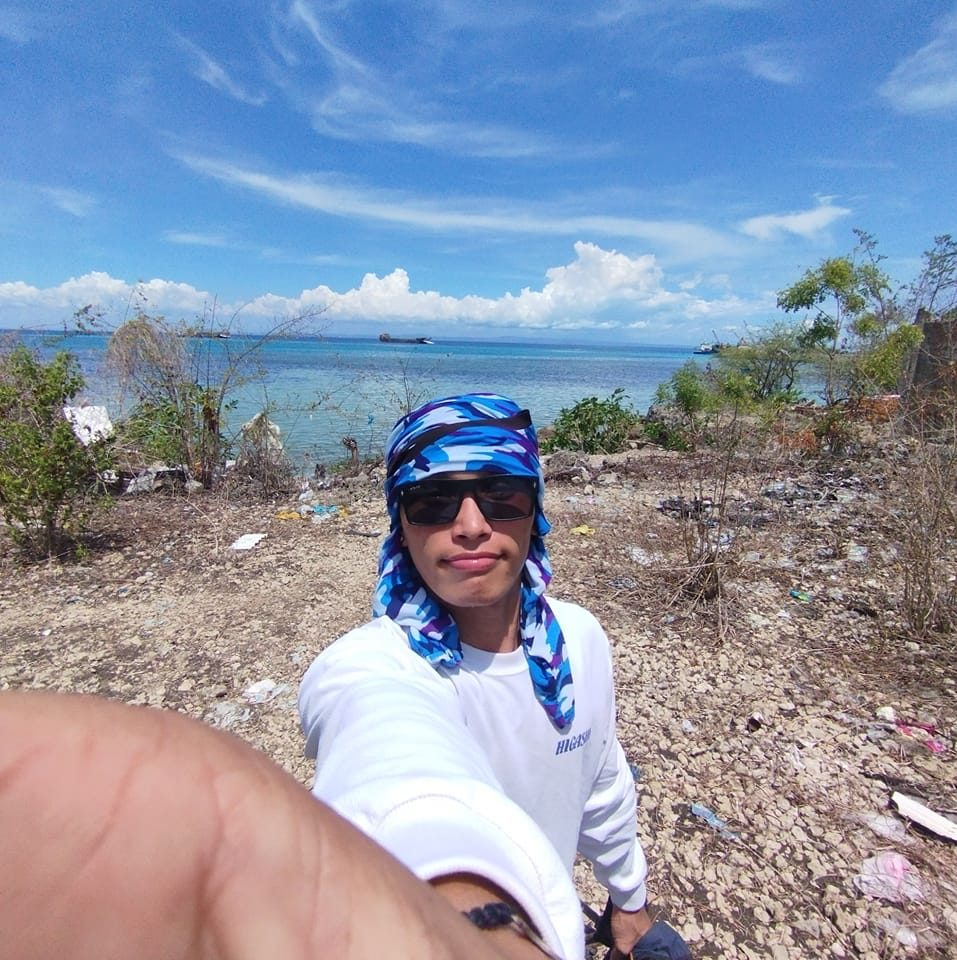
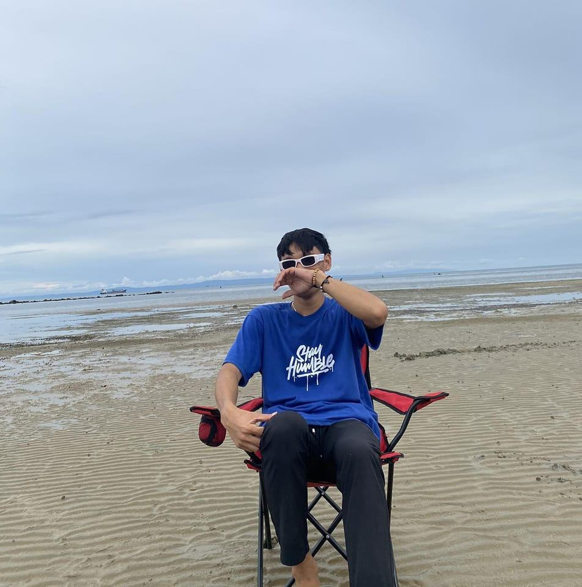
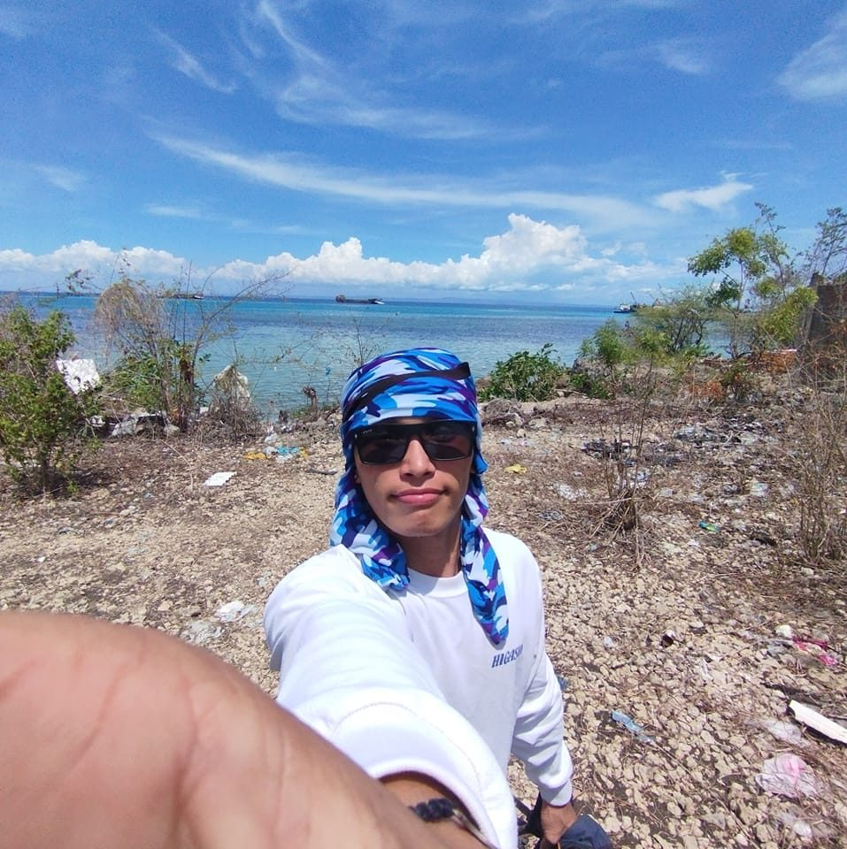

PERSONAL INFORMATION
- First Name: Alfred
- Last Name: Cornesio
- Age: 22
- Address: Panadtaran San Fernando Cebu
- Contact Number: 09-262-026-959
- Birthdate: September, 23 2001
- Status: Single
- Religion: Catholic

 




As a web designer, I've enjoyed the process of translating creative ideas into interactive, user-friendly websites. Navigating through responsive design challenges and solving technical issues has sharpened my skills and adaptability. Seeing the final product come to life and getting positive feedback from clients has been one of the most rewarding aspects of my experience.
One of my key experiences in software designing involved creating a scalable inventory management system for a client, where I had to ensure both performance and ease of use. I worked closely with developers to integrate intuitive UI/UX with complex backend logic, ensuring smooth data processing. The project taught me the importance of balancing technical precision with user-centered design, and it was rewarding to see the solution adopted successfully.
In digital marketing, I led a campaign to boost a brand's online presence by leveraging targeted social media ads and content marketing strategies. By analyzing campaign data and optimizing ad placements, I was able to significantly increase engagement and conversions. This experience enhanced my skills in data-driven decision-making and understanding audience behavior.